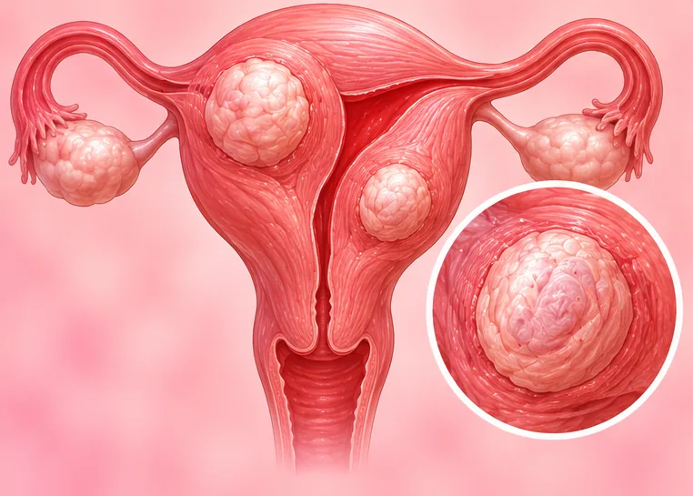
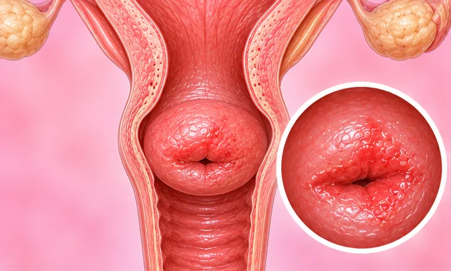
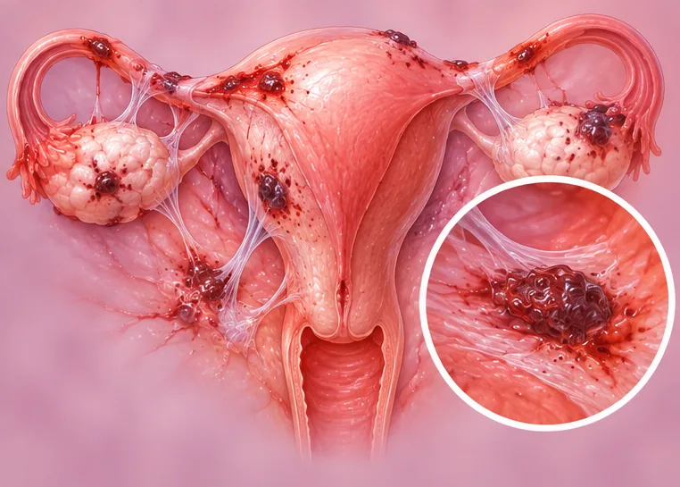
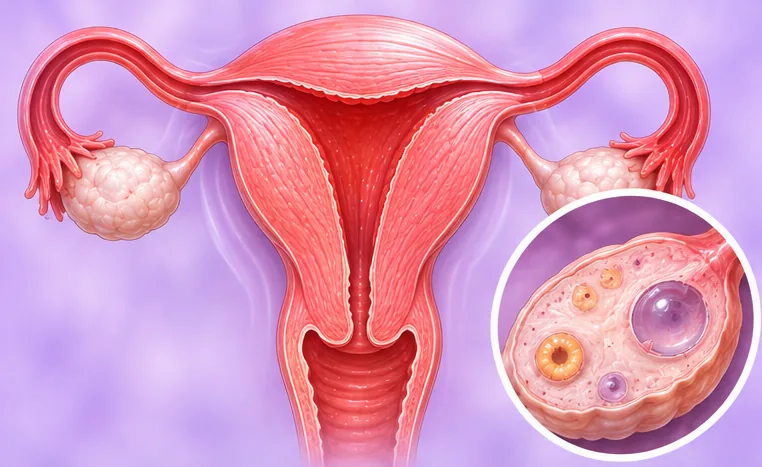
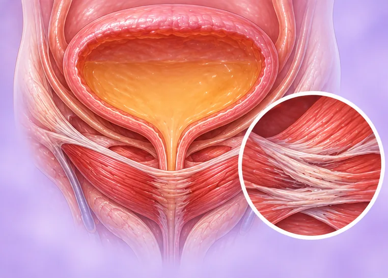
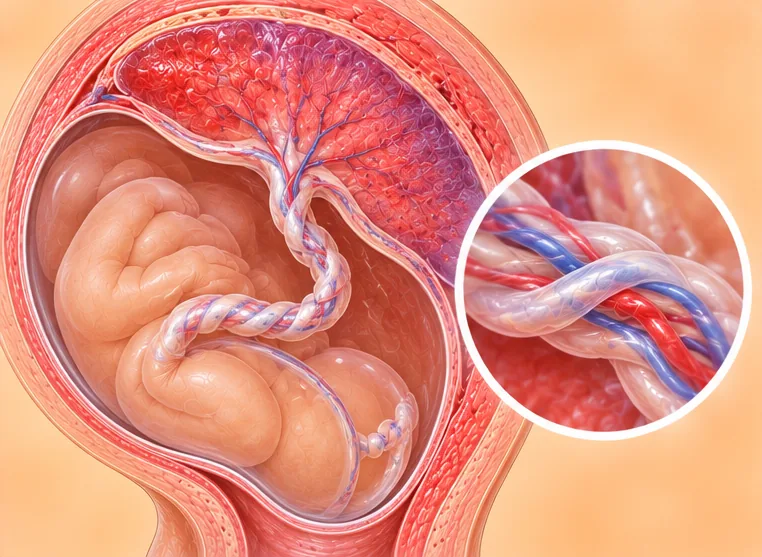

Kesihatan wanita
114 keadaan dan gejala
 Abses pelvis
Abses pelvis
Adenomiosis Adenosis payudara
Adenosis payudara Adneksitis (keradangan ovari dan tiub)
Adneksitis (keradangan ovari dan tiub) Atrofi vulva pada wanita berusia lanjut
Atrofi vulva pada wanita berusia lanjut Banyak darah beku semasa haid
Banyak darah beku semasa haid- Cecair dalam rahim
- Cecair dalam rongga rahim
- Cecair di belakang rahim (poket Douglas)
- Darah haid gelap
- Darah haid gelap dan sedikit
- Defek fasa luteal
- Ektasia duktus payudara

Ektropion serviks (hakisan serviks)
Endometriosis- Endometriosis dalam
- Endometritis (radang lapisan rahim)
- Endometritis kronik (radang lapisan rahim)
- Fibroadenoma payudara
- Fibroid rahim
- Gangguan ovulasi

Gejala perimenopaus- Haid berlebihan (menoragia)
- Haid datang lebih awal
- Haid lewat
- Haid sedikit
- Haid tidak datang
- Haid tidak teratur
- Hiperplasia endometrium (lapisan rahim terlebih tumbuh)
- Insufisiensi ovari pramatang (POI)
- Jangkitan kulat vagina (kandidiasis)
- Jangkitan payudara akut (mastitis)
- Jangkitan yis vagina (vaginitis kandida)
- Kelenjar limfa payudara membengkak
- Keradangan tiub Fallopio (salpingitis)
- Ketulan atau nodul payudara
- Ketulan di payudara
 Korpus luteum pecah
Korpus luteum pecah- Lapisan rahim menebal (endometrium)
- Lapisan rahim nipis (endometrium)
- Lekatan dalam rahim (sindrom Asherman)
- Lekatan pelvis
- Masalah ginekologi
- Mastitis (radang payudara)
- Menopaus
- Menopaus
- Neoplasia intraepitelium serviks (CIN)
- Ovari kurang berkembang (hipoplasia ovari)
- Ovari pecah
- Papiloma
- Papiloma intraduktal payudara
- Payudara berketul (perubahan fibrosistik)
- Payudara kurang berkembang (hipoplasia payudara)
- Payudara tambahan
- Payudara terlalu besar (makromastia)
- PCOS (sindrom ovari polisistik)
- Pendarahan rahim
- Pendarahan rahim tidak normal
- Pendarahan sekitar ovulasi (pertengahan kitaran)
- Pengelupasan lapisan rahim yang tidak teratur
- Pengumpulan cecair dalam pelvis
- Penyakit Paget pada payudara
- Penyakit payudara fibrosistik
- Penyakit radang pelvis
- Penyakit radang pelvis akut (PID)
- Penyakit radang pelvis kronik (PID)
- Polip endometrium (lapisan rahim)
- Polip rahim
- Polip serviks
- Prolaps dinding depan dan belakang vagina
- Prolaps dinding depan vagina (sistokel)

Prolaps rahim (rahim jatuh)- Puting susu pecah
- Puting susu terbalik
- Radang kelenjar Bartholin (bartholinitis)
- Rahim membesar
- Sakit perut semasa haid
- Sakit perut semasa ovulasi
- Senggugut (haid sakit)
- Senggugut fungsional (dismenorea primer)
- Senggugut sekunder (dismenorea)
- Serviks membesar (hipertrofi serviks)
- Servisitis (radang serviks)
- Servisitis akut (radang serviks)
- Servisitis kronik (radang serviks)
- Sindrom folikel terluteinisasi tidak pecah (LUFS)
- Sindrom kongesti pelvis
- Sindrom pra-haid (PMS)
- Sista adneksa (kawasan ovari atau tiub)
- Sista Bartholin
- Sista coklat (endometrioma)
- Sista korpus luteum
- Sista Naboth (sista kelenjar serviks)
- Sista ovari
- Sista ovari fungsian
- Sista payudara
- Sista pelvis
- Sista tiub Fallopio
- Sista vagina

Sukar hamil (ketidaksuburan)- Susu keluar dari payudara (galaktorea)
- Teratoma ovari (sista dermoid)
- Tiada haid (amenorea)
- Tidak berovulasi (anovulasi)
- Tiub Fallopio berisi cecair (hidrosalpinks)
- Tiub fallopio tersumbat
- Tompok putih pada vulva
- Tumor vagina jinak
- Vaginitis (keradangan vagina)
- Vaginitis atrofik
- Vaginitis atrofik pada wanita berusia lanjut
- Vaginitis berulang
- Vaginosis bakteria
- Vulvitis (radang vulva)